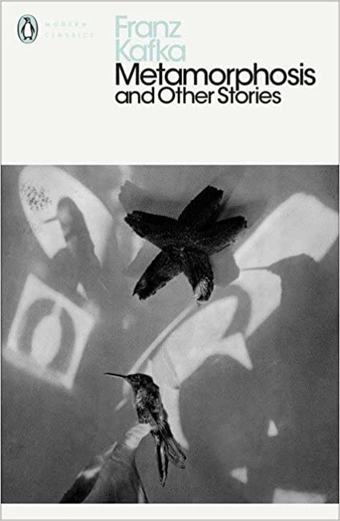

The Metamorphosis, written by Franz Kafka is a novel written in 1915. It tells the tale of a man, called Gregory Samsa, who is turned into an insect. We explore the hardship and rejection through his eyes, as his family continue to shun him.
In my opinion, this is Kafka's finest work. The depressing narrative is coerced by the spectacular and descriptive writing.
